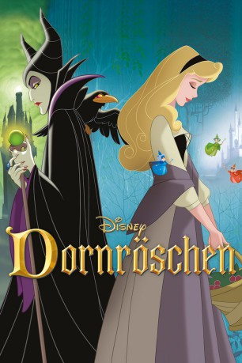

Auszeichnungen: für 1 Oscars nominiert
 gesehen am 26.12.2016
gesehen am 26.12.2016Alternativ: Sleeping Beauty
Auszeichnungen: für 1 Oscars nominiert gesehen am 26.12.2016
 
 IMDB-Wertung: 7.3 / 10
IMDB-Wertung: 7.3 / 10  Metascore:
Metascore: 
Es war einmal eine wunderschöne Prinzessin namens Aurora, die durch einen schrecklichen Fluch dazu verdammt war, sich bis zu ihrem 16. Geburtstag an einer Spindel zu stechen und tot umzufallen. Aber drei gute Feen setzen all ihre Zauberkräfte ein, um diesen Bann zu brechen. So fällt die Prinzessin nur in einen tiefen Schlaf und allein der Kuß des geliebten Prinzen Phillip kann sie wiedererwecken. Doch zuvor muß der Prinz gegen die böse Malefiz, die grausamste und gemeinste aller Hexen, kämpfen.
Jahr: 1959
Dauer: 75 Minuten
FSK: 0
Land: USA Studio: Buena Vista Film Distribution Co.Tonspuren: DTS - ,
Untertitel:
Auflösung: 1080p (1920x1072) Größe: 7147 MB
Genre: Fantasy, Animation/Trick, Familie, Liebe, Musical
Regisseur: Clyde Geronimi
Drehbuch: Suzanne Weinert
Soundtrack:
Darsteller:
 Verna Felton als Flora
Verna Felton als Flora Dal McKennon als Owl , uncredited
Dal McKennon als Owl , uncreditedDatei: X:\Kinder Disney HD\1900-1999\Dornröschen (1959, FSK0, 1920x1072).mkv seit 14.06.2016
Festplatte: Kinder-Filme+Trick
 Es gibt insgesamt 16 Filme in der Gruppe 'Kinder Disney HD\1900-1999'
Es gibt insgesamt 16 Filme in der Gruppe 'Kinder Disney HD\1900-1999'